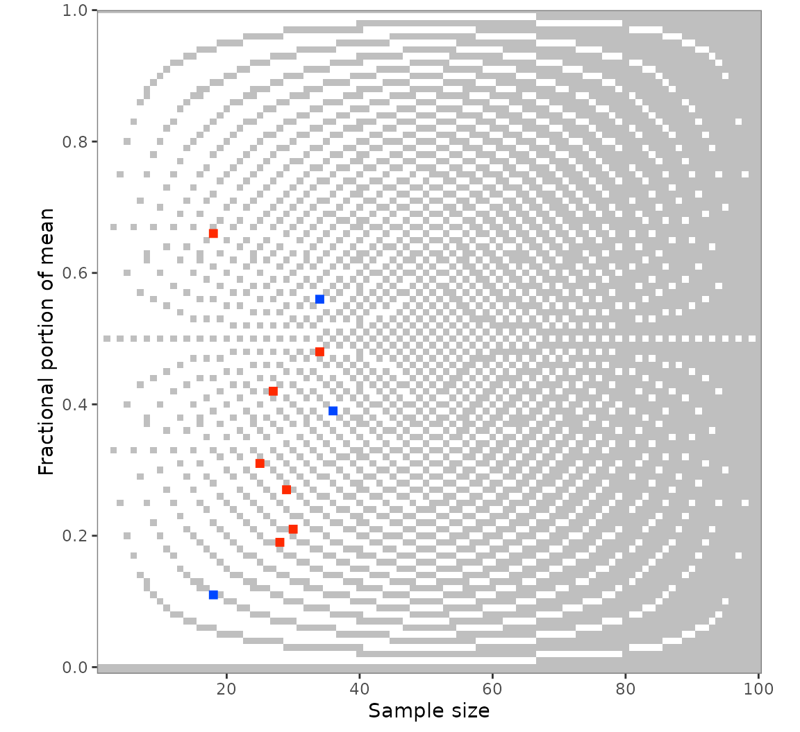
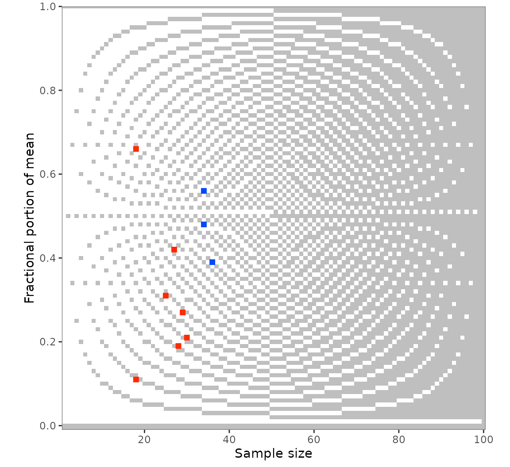

Granularity-related inconsistency of means, or GRIM, tests whether a reported mean or percentage of integer data is possible given the reported sample size (Brown and Heathers 2017). The mean of integers is a whole number divided by , so only certain values can occur. If none of these values would have been reported as the reported mean, given its number of decimal places, the mean and the sample size are GRIM-inconsistent.
This vignette covers the basics: grim() and
grim_map() for the test itself,
explain_print() to explain a result, audit()
for summaries, and grim_plot_grid() for visualization.
vignette("grim-in-depth") goes further.
Basic GRIM testing
Single cases: grim()
To test whether a mean of 5.27 is consistent with a sample size of 43:
grim(x = 5.27, n = 43, digits_x = 2, items_averaged = 1, data_type = "integer")
#> [1] FALSEdigits_x is the number of decimal places the mean was
reported with. It cannot be inferred from the value, because a mean
reported as 5.30 is stored as 5.3.
items_averaged is the number of items averaged into each
respondent’s score. Use 1 for a single item or for the percentage of
participants with some answer; see Scale items and
Percentages below.
data_type says what kind of data the mean summarizes.
GRIM only applies to whole numbers:
-
"integer": whole numbers, such as answers on a rating scale or counts. -
"continuous": anything else, such as reaction times or body mass index. Any mean is possible, so the result isTRUE.
None of these arguments has a default, since the result depends on all of them.
By default, grim() accepts a mean whether a tie was
rounded up or down (rounding = "up_or_down"). Reports
rarely say how they rounded, and the common methods only disagree on
ties: SPSS and Excel round a 5 away from zero, R and Python round it to
an even digit. A mean that fails under the default is inconsistent under
all of them. See Defaults in ?grim.
grim() is vectorized, but for more than a few cases,
grim_map() is more convenient.
Many cases: grim_map()
Enter the reported values into a data frame and call
grim_map() on it. One way to enter them is to copy a column
from a PDF and paste it into tibble::tribble(); see
vignette("wrangling").
flying_pigs1 <- tibble::tribble(
~x ,
8.97 ,
2.61 ,
7.26 ,
3.64 ,
9.26 ,
10.46 ,
7.39
) |>
dplyr::mutate(n = 28)
grim_map(flying_pigs1, digits_x = 2, items_averaged = 1, data_type = "integer")
#> # A tibble: 7 × 7
#> # GRIM: default settings
#> x n items_averaged data_type digits_x consistency exp_incon
#> <dbl> <int> <int> <chr> <int> <lgl> <dbl>
#> 1 8.97 28 1 integer 2 FALSE 0.72
#> 2 2.61 28 1 integer 2 TRUE 0.72
#> 3 7.26 28 1 integer 2 FALSE 0.72
#> 4 3.64 28 1 integer 2 TRUE 0.72
#> 5 9.26 28 1 integer 2 FALSE 0.72
#> 6 10.46 28 1 integer 2 TRUE 0.72
#> 7 7.39 28 1 integer 2 TRUE 0.72x and n are the inputs,
digits_x is the stated number of decimal places, and
consistency is the test result. exp_incon is
the probability that a random mean with that many decimal places would
be inconsistent with n; see GRIM statistics in
vignette("grim-in-depth").
The line above the column names lists any settings that differ from
their defaults, such as rounding = "up". Here, there are
none.
Scale items
If a mean is the average of several items, it is a multiple of
rather than of
.
Give the number of items, not of scale points, as
items_averaged: a mean over three 7-point items has
items_averaged = 3. Taken as single items, half of these
means from a three-item scale are wrongly flagged:
scale_means <- tibble::tribble(
~x ,
5.90 ,
5.71 ,
3.50 ,
3.82 ,
4.61 ,
5.24 ,
) |>
dplyr::mutate(n = 40)
scale_means |>
grim_map(digits_x = 2, items_averaged = 1, data_type = "integer")
#> # A tibble: 6 × 7
#> # GRIM: default settings
#> x n items_averaged data_type digits_x consistency exp_incon
#> <dbl> <int> <int> <chr> <int> <lgl> <dbl>
#> 1 5.9 40 1 integer 2 TRUE 0.4
#> 2 5.71 40 1 integer 2 FALSE 0.4
#> 3 3.5 40 1 integer 2 TRUE 0.4
#> 4 3.82 40 1 integer 2 TRUE 0.4
#> 5 4.61 40 1 integer 2 FALSE 0.4
#> 6 5.24 40 1 integer 2 FALSE 0.4
scale_means |>
grim_map(digits_x = 2, items_averaged = 3, data_type = "integer")
#> # A tibble: 6 × 7
#> # GRIM: default settings
#> x n items_averaged data_type digits_x consistency exp_incon
#> <dbl> <int> <int> <chr> <int> <lgl> <dbl>
#> 1 5.9 40 3 integer 2 TRUE 0
#> 2 5.71 40 3 integer 2 TRUE 0
#> 3 3.5 40 3 integer 2 TRUE 0
#> 4 3.82 40 3 integer 2 TRUE 0
#> 5 4.61 40 3 integer 2 TRUE 0
#> 6 5.24 40 3 integer 2 TRUE 0An items_averaged column of data lets the
number vary by row:
mixed_scales <- tibble::tribble(
~x , ~items_averaged ,
6.92 , 1 ,
3.48 , 1 ,
1.59 , 2 ,
2.61 , 2 ,
4.04 , 3 ,
4.50 , 3 ,
) |>
dplyr::mutate(n = 30)
mixed_scales |>
grim_map(digits_x = 2, data_type = "integer")
#> # A tibble: 6 × 7
#> # GRIM: default settings
#> x n items_averaged data_type digits_x consistency exp_incon
#> <dbl> <int> <int> <chr> <int> <lgl> <dbl>
#> 1 6.92 30 1 integer 2 FALSE 0.7
#> 2 3.48 30 1 integer 2 FALSE 0.7
#> 3 1.59 30 2 integer 2 FALSE 0.4
#> 4 2.61 30 2 integer 2 FALSE 0.4
#> 5 4.04 30 3 integer 2 TRUE 0.1
#> 6 4.5 30 3 integer 2 TRUE 0.1Percentages
A percentage with one decimal place is a proportion with three.
x_meaning = "percentage" divides x by 100 and
adds 2 to digits_x, so these percentages are tested as
proportions with three decimal places:
percentages <- tibble::tribble(
~x , ~n ,
32.5 , 438 ,
35.6 , 455 ,
21.7 , 501 ,
39.3 , 516 ,
)
percentages |>
grim_map(digits_x = 1, items_averaged = 1, data_type = "integer", x_meaning = "percentage")
#> # A tibble: 4 × 7
#> # GRIM: x_meaning = "percentage"
#> x n items_averaged data_type digits_x consistency exp_incon
#> <dbl> <int> <int> <chr> <int> <lgl> <dbl>
#> 1 32.5 438 1 integer 1 FALSE 0.562
#> 2 35.6 455 1 integer 1 TRUE 0.545
#> 3 21.7 501 1 integer 1 FALSE 0.499
#> 4 39.3 516 1 integer 1 TRUE 0.484GRIM is therefore much more powerful for percentages than for means with the same number of decimal places.
A percentage can average several items, too: the mean percent correct
on a test of k questions is a multiple of
,
as is a pooled proportion of successes over k trials per
participant. Set items_averaged = k in such cases.
Explaining consistency results
explain_print() explains the results of
grim_map() in plain words, with every number needed to
check them by hand. It picks rows like dplyr::slice(), so
this explains the first inconsistent value set:
flying_pigs1 |>
grim_map(digits_x = 2, items_averaged = 1, data_type = "integer") |>
dplyr::filter(!consistency) |>
explain_print(1)
#> GRIM test: x = 8.97, n = 28, items_averaged = 1, data_type = "integer"
#>
#> The mean was reported as 8.97, with 2 decimal places. Before rounding (assuming
#> either rounding up from 5 or down from 5), it could have been anything from
#> 8.965 to 8.975.
#>
#> The mean of 28 integers is their sum divided by 28. So the sum must be from
#> 8.965 * 28 = 251.02 to 8.975 * 28 = 251.3.
#>
#> A sum of integers is itself an integer, but there is no integer in this range.
#> The nearest ones are 251 and 252. They give 251 / 28 = 8.9643 and 252 / 28 = 9,
#> which round to 8.96 and 9.00, not to 8.97.
#>
#> ==> Inconsistentexplain_map() adds the explanations to the data frame as
an explanation column instead, e.g., to save them with the
results. Both test each row again with the settings of the
grim_map() call, such as rounding, and throw
an error if a result differs from the consistency column.
For a single value set, use grim_explain(), which takes the
same arguments as grim().
To see the test rather than read it, draw one value set with
grim_plot_line(); see
vignette("grim-in-depth").
Summaries with audit()
audit() summarizes the output of
grim_map():
flying_pigs1 |>
grim_map(digits_x = 2, items_averaged = 1, data_type = "integer") |>
audit()
#> # A tibble: 1 × 6
#> all_cases testable_cases incon_cases emp_incon exp_incon ratio
#> <int> <int> <int> <dbl> <dbl> <dbl>
#> 1 7 7 3 0.4286 0.72 0.5952-
all_cases,testable_cases: the number of value sets, and of those with a positiveexp_incon. -
incon_cases,emp_incon: the number and proportion of inconsistent value sets. -
exp_incon: the mean probability of GRIM inconsistency. -
ratio: the ratio ofemp_incontoexp_incon, computed over the cases with a test result.
If the value sets come from several studies or tables,
.by summarizes each one separately:
flying_pigs1 |>
dplyr::mutate(study = c("A", "A", "A", "B", "B", "B", "B")) |>
grim_map(digits_x = 2, items_averaged = 1, data_type = "integer") |>
audit(.by = study)
#> # A tibble: 2 × 7
#> study all_cases testable_cases incon_cases emp_incon exp_incon ratio
#> <chr> <int> <int> <int> <dbl> <dbl> <dbl>
#> 1 A 3 3 2 0.6667 0.72 0.9259
#> 2 B 4 4 1 0.25 0.72 0.3472Columns that play no role in the test, such as study
here, are kept to the right of consistency.
Visualization with grim_plot_grid()
grim_plot_grid() takes the output of
grim_map():
many_means <- tibble::tribble(
~x , ~n ,
7.19 , 28 ,
4.56 , 34 ,
0.42 , 27 ,
1.31 , 25 ,
3.48 , 34 ,
4.27 , 29 ,
6.21 , 30 ,
3.11 , 18 ,
5.39 , 36 ,
5.66 , 18 ,
)
many_means |>
grim_map(digits_x = 2, items_averaged = 1, data_type = "integer") |>
grim_plot_grid()
Each value set is plotted at its sample size (x-axis) and the
fractional part of its mean (y-axis), in blue if consistent and red if
not. The background raster shows, for every combination of sample size
and fractional part, whether it is GRIM-consistent (grey) or not
(white). It depends on the number of decimal places, which
grim_plot_grid() reads from the digits_x
column, and on the rounding method, which the mapper recorded in its
output:
many_means |>
grim_map(digits_x = 2, items_averaged = 1, data_type = "integer", rounding = "ceiling") |>
grim_plot_grid()
In the first plot, the grey vertical line at
,
and the one at
,
which is grey in 60% of the cells rather than about 40% as its
neighbors, come from the default rounding = "up_or_down":
many achievable means at these sample sizes lie exactly halfway between
two reportable values, and the default accepts both ways of rounding
them. With three or more decimal places, a gradient is shown instead of
a raster.
grim_plot_grid() takes the output of any GRIM or GRIMMER
mapper, such as grim_map() or
grim_map_seq().
Interpreting results
An inconsistency means that an assumption of the test is false or that a number was reported incorrectly, often for a benign reason. What to rule out before drawing conclusions is discussed in the section on interpreting GRIM results of Hussey (2026).
Going further
vignette("grim-in-depth") shows the numbers behind a
result, tests values around the reported ones with
grim_map_seq() and unknown group sizes with
grim_map_total_n(), and covers the GRIM statistics.